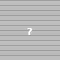

Mission
Placeholder mission statement: We investigate the principles of biological transport networks across scales, integrating theory, computation, and experiment to understand how structure, flow, and adaptation co‑evolve. This paragraph is a placeholder — replace with 2–3 concise sentences about your group’s focus and values.
Research

Network Homogenization

Neuron

Placenta
People
class="section">People class="section">PeoplePeople member -->

Selected Publications
Software & Data
vaskymo
Python tools for vascular network extraction, editing (Napari), and pulsatility analysis.
Quail yolk-sac dataset
Registered image stacks, derived graphs, and per-vessel time series for 21–27 somites.
News
- Oct 2025: Preprint on robust harmonic regression for flow pulsatility posted to arXiv.
- Sep 2025: Released v0.3 of vaskymo with Napari 3D editor updates.
Contact
Center for Computational Biology, Flatiron Institute
162 5th Ave, New York, NY 10010